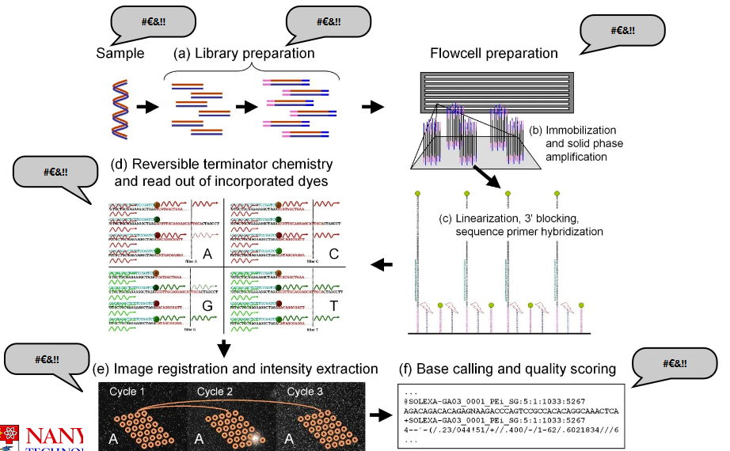
3 Data Preprocessing and Quality Control
Today’s discussion covers several important aspects of sequencing data analysis. First, it’s crucial to be aware of potential sources of errors that can occur during the sequencing process. Next, we’ll delve into preprocessing, which involves getting the raw sequencing data ready for analysis. Quality control measures will help ensure that the data is accurate and reliable. We’ll also explore methods for detecting contamination in the sequencing data. To put these concepts into practice, we’ll walk through an example analysis using Drosera capensis as our model organism.
3.1 Sources of Error in Sequencing
“Limitations of the sequencing platforms, and particular artifacts associated with sequences generated on these platforms, need to be understood and dealt with at various stages of the project including planning, sample preparation, run processing and downstream analyses.”
– Addressing Challenges in the Production and Analysis of Illumina Sequencing Data
Data preprocessing and quality control are the two most important things in data analysis.
There’s a phrase called “garbage in, garbage out” or GIGO for short. What this basically means is that if you start with bad data, you will produce bad analysis. Similarly, if you start with poor-quality ingredients, you will not make good food. Because of this, you need to ensure that your data is workable before you do anything else.
3.1.1 Problems with Sampling
The sample itself can introduce errors.
For instance, if you don’t know what you’re sampling or got your samples mixed up, this could influence the final results.
Or, if your sample is contaminated or degraded (i.e., not taken care of well enough), this can also affect the final quality of the data.
3.1.1.1 Possible Sources of Contamination
There are a few possible ones:
- Microbes such as bacteria, viruses, parasites, and whatnot.
- Maybe the sampler themselves could have dirty hands and introduced something into the sample without knowing it?
- Researchers mixing their samples.
- Using dirty tools.
There are more sources here.
3.1.1.2 DNA Fragmentation
The environment can have a significant impact on ancient DNA samples. This degradation process causes the DNA to break into small fragments and leads to specific changes, such as the conversion of cytosines to uracil.
To tackle these challenges, scientists use various techniques to enrich fragments with uracils in ancient DNA samples. By analyzing the patterns of DNA fragmentation, researchers can clean and correct data, using tools like mapDamage. These methods help us make sense of ancient DNA, even when it’s been affected by the passage of time and environmental factors.
3.1.2 Problems with Creating a Genomic Library
There are a few:
Adapter Dimers
Illustration of an Adapter Dimer Adapter dimers can reduce the amount of useful data that’s generated by the sequencing machine. An adapter dimer is a small bit of DNA that is mistakenly sequenced instead of the target DNA, so this decreases the amount of useful data at the end of the day.
Chimeras
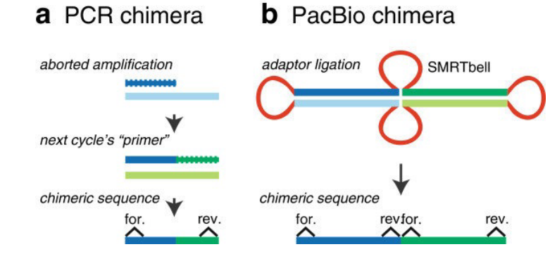
Illustration of two Chimeras A chimera is a DNA sequence that is artificially made by joining two more DNA sequences. This happens when adapters mistakenly link unrelated DNA fragments (i.e., especially the SMRTbell templates above).
Bad Insert Size
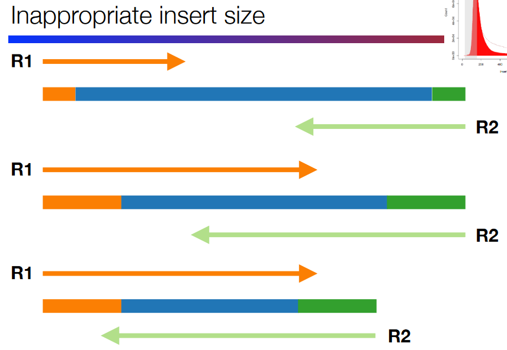
Illustration of a Bad Insert Size This refers to a badly-spaced gap between the DNA fragments at the end (i.e., the primers and adapters). The insert size - the “gap” - needs to be the right size.
If the insert size is too big or too small, this can lead to issues down the road.
Sequencing Artefacts
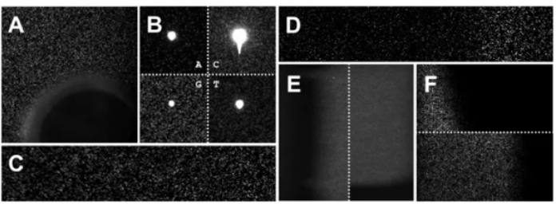
Examples of Sequencing Artefacts A sequencing artefact is a fancy term to refer to anything during the sequencing process that can affect the final quality of the data - for instance, air bubbles and dust particles. These artefacts can lead to repetitive patterns.
A common kind of artefact that occurs is when two DNA fragments produces two distinct clusters, hence affecting data analysis.
Duplicated Reads
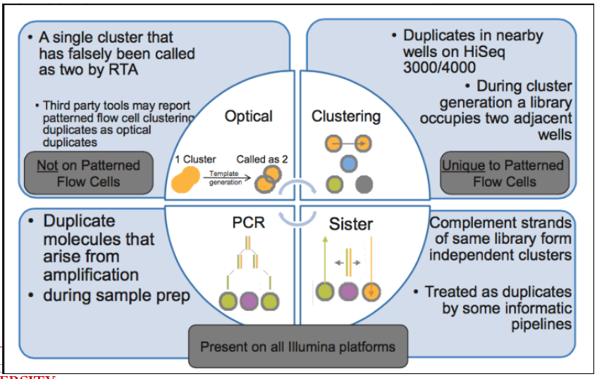
Examples of Duplicated Reads This refers to multiple copies of the same DNA sequence, and this can happen because of numerous factors.
Duplicated Reads
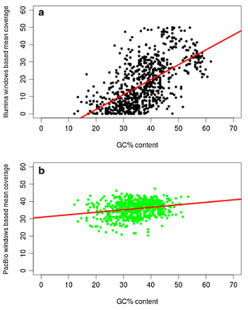
Plot Illustrating GC Content This kind of bias happens in Illumina sequencing as the technology favors DNA sequences with different amounts of “G” and “C” nucleotides. This can lead to the uneven coverage of the genome. Furthermore, sequencing technologies like PacBio and Illumina don’t do well with long sequences of repeating DNA sequences.
At least PacBio is less error prone to GC content biases or DNA length. But, it does have a higher error rate (i.e., 13% - 15%) compared to other technologies.
3.2 Preprocessing Techniques
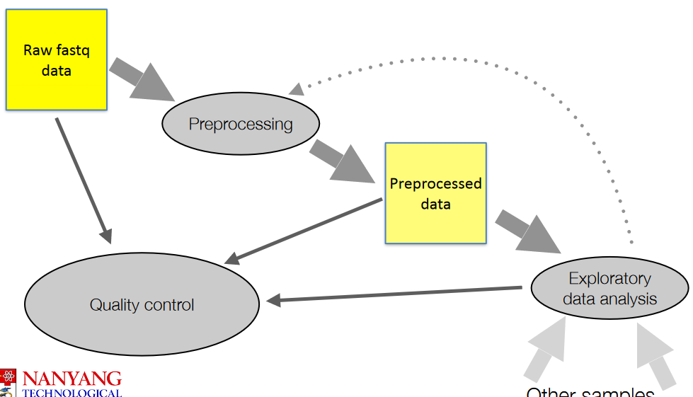
The above figure show general steps when it comes to working with raw data (i.e., .fq files).
3.2.1 Adapter Removal
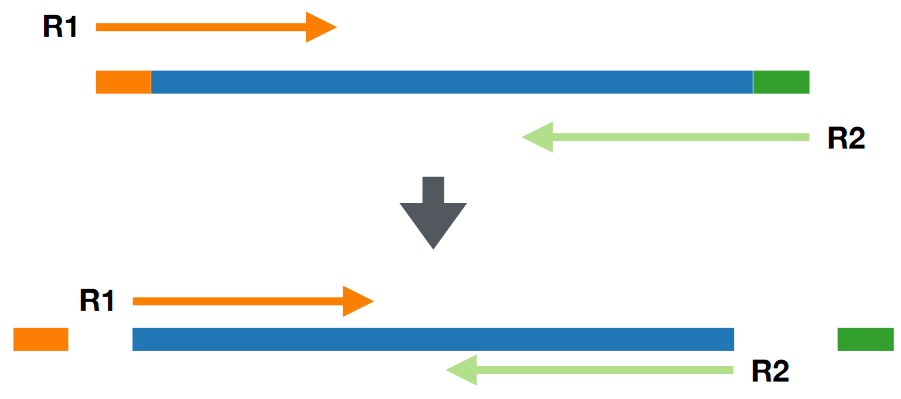
Adapter removal refers to removing adapter sequences - short pieces of DNA used during sequencing. This step ensures that the data is as clean as possible.
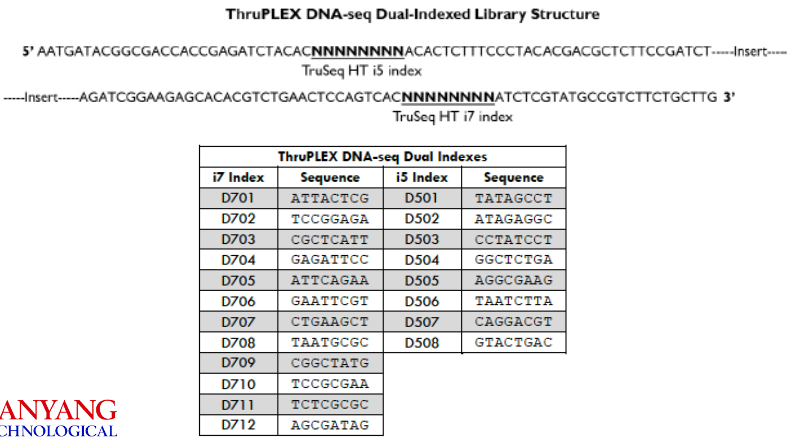
Adapters have specific sequences; software is designed to recognize, locate, and remove these adapters from the data.
These software can also handle some errors within the data and ensure that the adapters are removed from the data.
3.3 Quality Control with Fast QC
3.3.1 FastQC
There are numerous statistics (by section name) to take note of when using FastQC to quality control data:
Basic Statistics
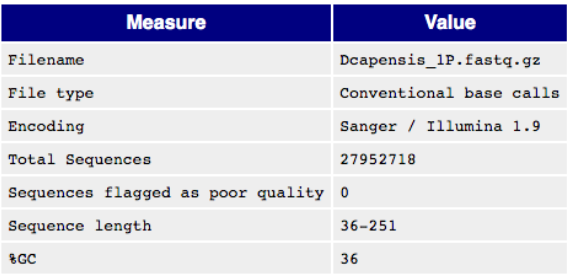
Basic Information in a FastQC Report This part lists basic information about a raw data file.
Per Base Sequence Quality
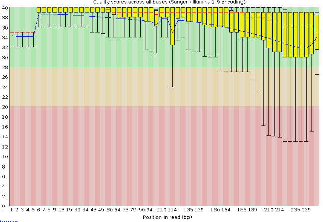
Quality Scores Boxplot Generally speaking, the longer the read, the lower the phred quality score.
In the above graph, we see that most boxplots have a median score of above 30, but there are also many whose minimum score (i.e., the bottom whisker) is below 20.
Per Tile Sequence Quality
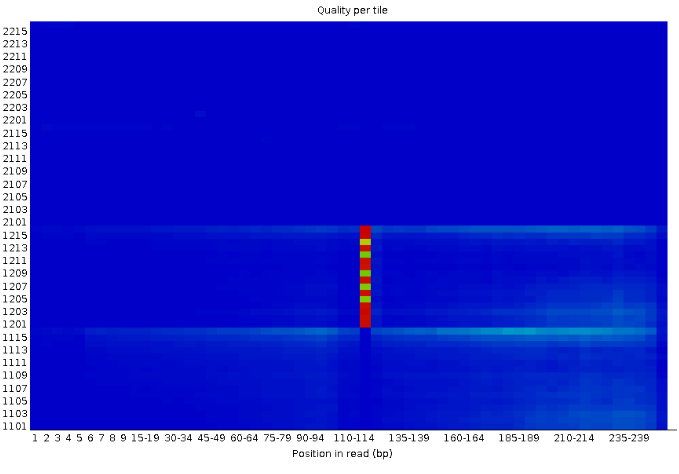
Quality Scores Heatmap A blue square on this plot means that everything went well. Otherwise, the yellow, green, and red squares hint that there’s some issue with the quality of the data at that exact spot in the raw data.
The Y-axis is the phred score, but scaled up by 1000.
Per Sequence Quality Scores
Quality Scores Heatmap A blue square on this plot means that everything went well. Otherwise, the yellow, green, and red squares hint that there’s some issue with the quality of the data at that exact spot in the raw data.
The Y-axis is the phred score, but scaled up by 1000.
Per Sequence Quality Scores
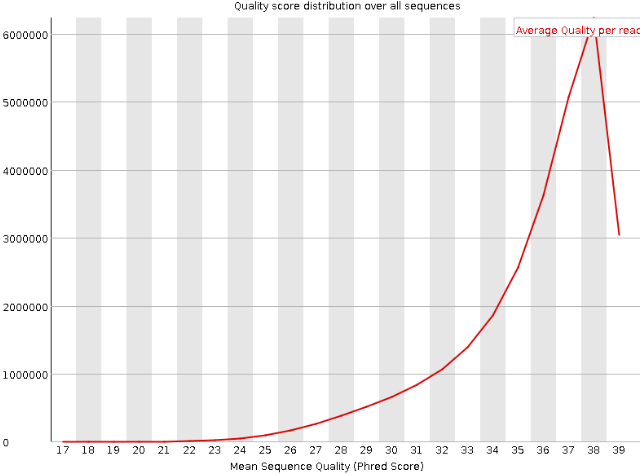
Per Sequence Quality Plot The Y-axis refers to the amount of DNA sequences that have that same mean phred score on the X-axis. That peak in the above density plot is the mean phred score of all DNA sequences.
Per Sequence Quality Scores
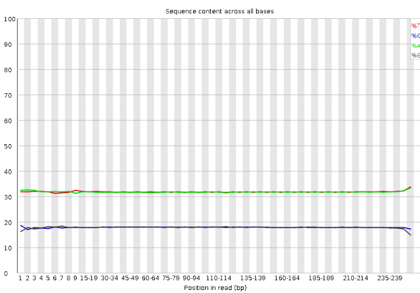
Per Sequence GC Content This plot shows the percentages of bases along DNA sequencing reads.
Per Sequence Quality Scores
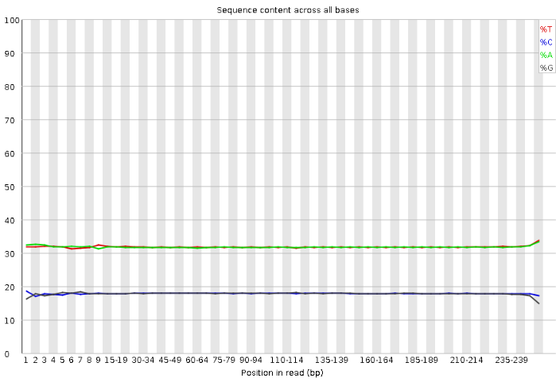
Per Base Sequence Content This plot shows the percentages of bases along DNA sequencing reads.
Per Base Sequence N Content
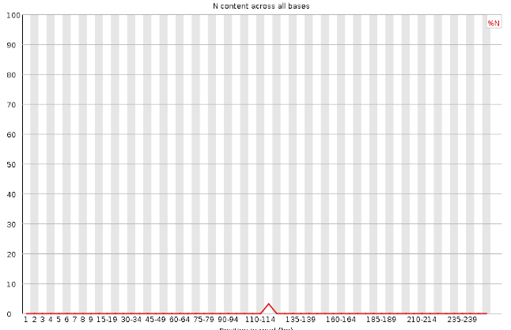
Per Base Sequence N Content Per Base Sequence N Content
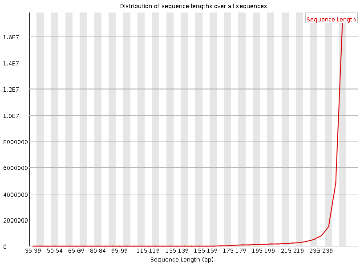
Per Base Sequence N Content Per Base Sequence N Content
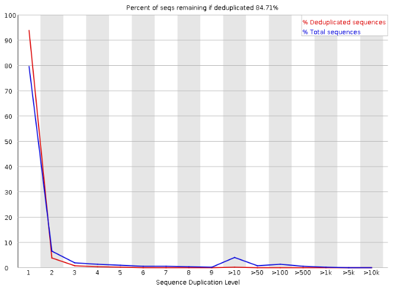
Sequence Duplication Levels
3.4 Identifying Possible Contaminations
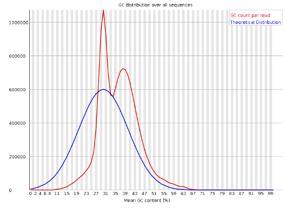
The bimodal distribution in the GC count read (i.e., that red density plot) is an indicator of possible contamination. One of the peaks could be indicative of something else.
3.4.1 Using Databases to Identify Possibly Contaminated Data
One can match part of their data against reference databases - this is usually done with tools like BLAST or Diamond as they readily do this for you.
What follows after is something called metagenomics analysis - the goal of this kind of analysis is to determine the origin of the DNA sequences. The National Center for Biotechnology Information (i.e., NCBI) has a lot of DNA sequences and each sequence belongs to a species; there’s also a taxonomy tree that organizes these species into families, genuses, and species.
3.4.1.1 How Does it Work?
When comparing sequences against reference ones, we look for matches - these are called hits. Each DNA sequence or read that we compare is tied to a specific organism.
To classify these reads, we identify something called the lowest common ancestor (i.e, LCA) in the species tree for each read. What this basically means is that we find the most specific taxonomic level where all the species that our read matches have similar DNA. Because of this, each read that we compare has a taxonomic classification as well.
Tools such as MEGAN can help automate this process.
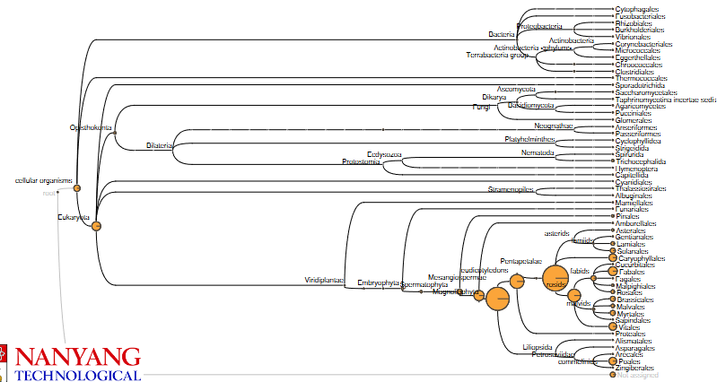
The species that are closer (at least from an evolutionary viewpoint) tend to get more hits in this example. If the species that was sequenced isn’t in the NCBI, then the BLAST that was run on other species would contain the sequence.
3.4.2 Using K-mers to Identify Contamination
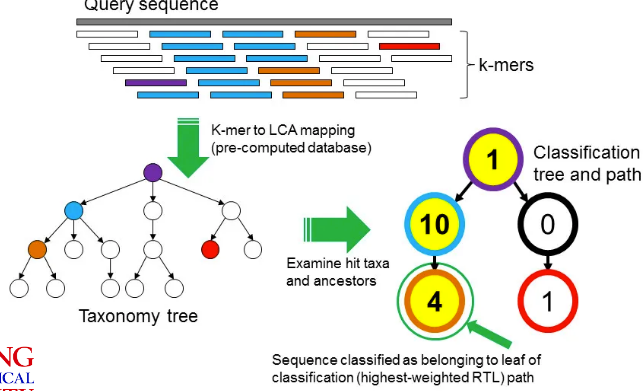
A k-mer is a fixed DNA fragment of length “k”. The above graphic shows how one can use K-mers to identify contaminated samples:
- Given a the genome (from NCBI) of a particular species, split it into k-mers and then find the LCA of that k-mer.
- We’ll also split our read into the same k-mers.
- We find hits between the k-mers from our hits and the k-mers from the species’ genomes. We can then apply some sort of voting system to classify the read.
3.5 Is There Enough Data?
In order to do something called de novo assembly, we need to know if there’s enough data first. We can do this through flow-cytometry based size estimates to get a rough idea of a genome’s size.
But, one thing to keep in mind is that different individuals in the species may have different genetic makeups and also different genome sizes (e.g., chromosomal abnormalities).
A polyploid is an organism that has multiple sets of chromosomes, and they are more common than we may think.
3.5.1 K-mer Histogram
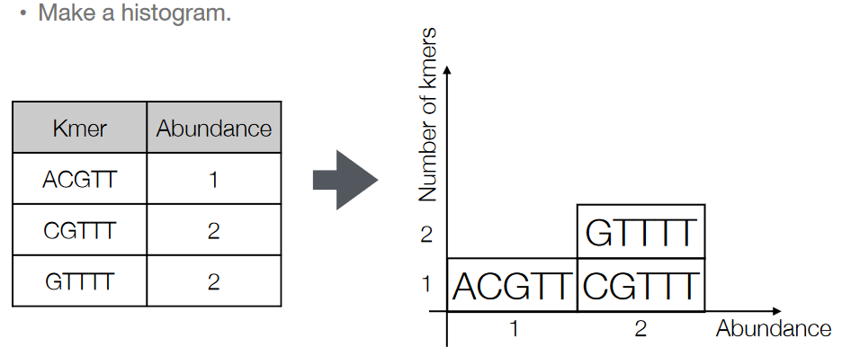
The K-mers that we get from our reads can be made into a histogram. We basically just count how many times each k-mer appears in the read and make it into a histogram.
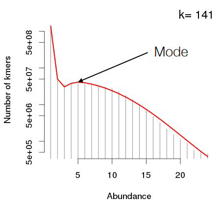
If the k-mers that are used to make the histogram are long enough, the mode - the peak with the highest - is the most abundant k-mer in the data.
We also use the k-mer histogram’s mode to estimate of the coverage: the average amount of times that a base in the genome is sequenced.
Then, we divide the total amount k-mers that have been sequenced by the said mode - this should give an estimate of the genome size.
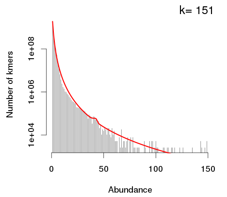
If a K-mer histogram doesn’t have any modes (like the one above), this means that the coverage isn’t high enough. So, we need to add in more data; this is because the genome is too big.
3.5.2 Estimating the “K” in K-mers
If the K-mer is pretty short - say, \(K = 4\), then the possible K-mers that could appear will appear. In this case, there are \(4^4 = 256\) different combinations of 4-mers. Though, one thing to be wary of is that short K-mers don’t have uniqueness because they can occur in so many places in the data.
The last point is in contrast to long K-mers - the longer the K-mer, the lesser the amount of K-mers possible for that amount of \(K\).
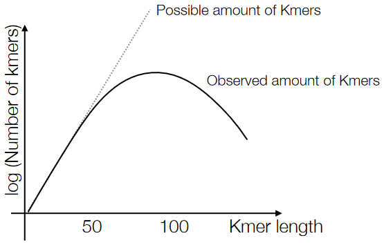
Because of the above points, the number of unique K-mers in our data should make a sort of parabola, and that peak in the middle is our optimal \(K\) value.
3.5.3 Kmergenie
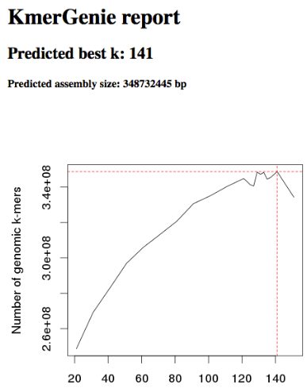
Kmergenie is a kind of software that helps people estimate the genome size of their data using the k-mer analysis (i.e., the points said before this). Though, some software like MaSuRCA require the user to specify a “k” value beforehand.
There is also another software called jellyfish that also does the same thing as kmergenie - it helps find the optimal value of \(K\) in the K-mer histogram.
And then there’s also another piece of software called SPAdes - this uses multiple K-mer values and usually gives good results. SPAdes pretty much gives the user the option to choose from several optimal values of \(K\) given their goals.
3.6 Data-Driven Quality Control
We need to conduct a check on the data to assess its quality - this sort of checking can highlight any issues with a specific library or a dataset (though, the common errors may include stuff like contaminated adaptors, low-quality data, and sequencing errors).
That said, there are usually two parts to this “checking”:
Trim Reads
We need to “trim” or remove any low-quality data or bases from the data. This helps improve the quality of the data (obviously).
Mapping to Reference Genome
This allows us to understand how well our data maps to the expected results.
Then, once all of this is done, we need to find any outliers using Data Science techniques. These anomalies could mean that there’s a sequencing problem, sample contamination, or even some other issue that needs to be looked into.
3.6.1 Making a New Genome
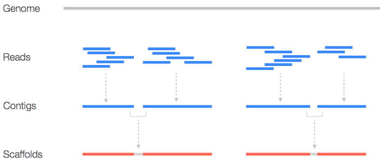
If we make a new genome, we usually do something called a quick draft assembly on it. This can let us know stuff like coverage and insert size distribution and can be helpful down the road.
That said, there are two terms that are must-knows:
Contigs
This just refers to a contiguous DNA sequence that doesn’t have any gaps or unsequenced regions. These “contigs” represent continuous segments of the genome and are usually obtained in the early stages of the assembly process.
Scaffold
This is a long structure that you get from joining multiple contigs together. Here, contigs are joined using “N”s - unsequenced bases. Scaffolds help link contigs and are a more comprehensive representation of the genome.
3.6.2 GC and Average Coverage Plot
Different species have varying genome lengths and GC percentages. These characteristics are unique to each species and can significantly impact analysis.
During the sequencing process, reads are randomly sampled from the genomes being studied. This random sampling can lead to one of two thigns:
Species with long genomes tend to have lower average coverage because there are more DNA base pairs to cover with the same number of sequenced reads.
Species with shorter genomes tend to have higher average coverage with the same sequencing depth.
That said, the GC content of a genome can vary based on various factors, including the species’ lifestyle, environmental niche, and energy source. Different species may have distinct GC percentages.